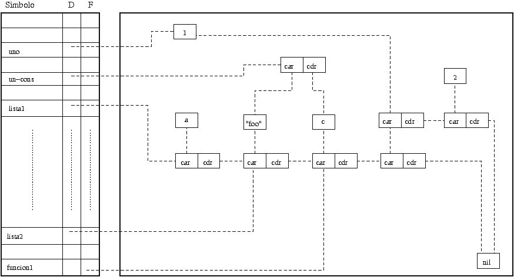
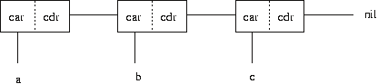

Lisp, un Lenguaje que se Aprende en 10 Minutos
1 Introducción
Lisp es uno de los lenguajes de programación más simples que existen. Unos pocos conceptos, siete u ocho, abarcan todo el lenguaje. Hablamos de la especificación base del lenguaje, naturalmente. Los distintos dialectos han ido extendiendo el lenguaje y añadiendo nuevas construcciones. Pero, y esto es tremendamente importante, lo han hecho siempre utilizando esos mismos conceptos base. Eso implica que, una vez conocidos los pocos conceptos que constituyen la base del lenguaje, el lector será capaz de interpretar prácticamente cualquier programa Lisp.
Esta circunstancia (ser un lenguaje muy sencillo) permite abarcar su estudio desde un punto de vista bastante original, y extremadamente productivo. En el aprendizaje de cualquier otro lenguaje de propósito general se tiende (muy acertadamente) a comenzar impartiendo las características a nivel de lenguaje como léxico (cómo se escribe una palabra reservada), sintaxis (en qué consiste una sentencia, o una expresión) y semántica (cómo evalúa una expresión aritmética). Una vez conocidos estos aspectos del lenguaje, por lo general se pasa a exponer las características más específicas del entorno y, por tanto, de cómo se traducen las semánticas expresadas en el lenguaje en una ejecución (las variables globales en C se inicializan a 0, cosa que no pasa con las variables locales, que contienen un valor indefinido, por ejemplo).
En el caso de Lisp, vamos a hacerlo al revés: partiendo del conocimiento de cómo funciona (o cómo "ve el mundo") un intérprete de Lisp, pasaremos a exponer los aspectos más importantes del lenguaje.
2 Memoria: ¿qué hay?
Como podemos ver en la figura 1, un intérprete Lisp mantiene dos regiones en memoria, diferenciadas:

Figura 1: Memoria de un intérprete Lisp
- La memoria de datos (a la derecha, en la figura).
- Un diccionario de términos, que asocia símbolos con dos punteros (a la izquierda, en la figura).
El intérprete utiliza la memoria de datos para almacenar todos los datos presentes en un proceso Lisp. Se trata de una memoria "idealizada", en el sentido de que es capaz de almacenar distintos tipos de datos (conocidos como "átomos" en Lisp) y cada uno de ellos ocupa una sola posición. Por ejemplo, un número entero y una cadena de caracteres son ambos átomos y, por tanto, ambos pueden almacenarse en una posición de la memoria de datos (la cadena de caracteres es atómica, y no está compuesta de partes).
El contenido de la memoria de datos está sujeta a recolección de basura. Como veremos más adelante, existen referencias a los elementos de la memoria desde el diccionario de símbolos. Cuando un átomo ya no es referenciado (ni directa ni indirectamente) es candidato a recolección de basura, y el colector de memoria marcará la posición que ocupa en la memoria como disponible.
Así pues, la memoria de datos contiene átomos Lisp. Pese a que los tipos de átomos pueden variar dependiendo del dialecto que se esté utilizando (Common Lisp, Emacs Lisp, Scheme, etc.) existe un conjunto de tipos bastante estandarizado que podremos encontrar en cualquiera de ellos. Veámoslos.
- Números. Lisp permite almacenar en la memoria de datos átomos de tipo numérico. Esto incluye tanto números enteros (2, 4, 32222) como reales (2.0, 4.43, 3.2222). En forma escrita, los átomos numéricos utilizan el léxico habitual de dígitos consecutivos, utilizando un punto para denotar la coma decimal. En la figura 1 podemos ver dos átomos numéricos: uno consiste en el número 1 y el otro en el número 2.
- Cadena de caracteres. En Lisp las cadenas de caracteres son átomos, y pueden contener cualquier carácter. En forma escrita, los átomos cadena de caracteres utilizan la representación habitual de caracteres encerrados entre comillas dobles. En la figura 1 podemos ver un átomo de tipo cadena de caracteres en la memoria de datos, siendo su valor "foo".
- Símbolos. Los símbolos son nombres. Su única semántica es que dos símbolos de distinto nombre se consideran como símbolos distintos. En forma escrita, los símbolos utilizan un léxico similar al de los identificadores de otros lenguajes de programación, aunque permiten la inclusión de muchos caracteres alfanuméricos dada la particular (y generosa) forma sintáctica de Lisp, como guiones y barras. En la figura 1 podemos ver dos átomos de tipo símbolo, siendo sus valores a y c.
Un aspecto importante de la memoria de datos es que, a diferencia de casi todos los demás modelos, no contiene variables, sino valores. Eso significa que las cajas (los átomos) de las que se compone no deben verse como "contenedores" de valores, sino como la idealización del valor en sí. Si un programa Lisp necesita un valor numérico 0, encontrará dicho valor numérico en una zona de la memoria de datos. Si necesita un 22, en lugar de "sobreescribir" el valor 0, utilizará el átomo de valor 22 presente en otra zona de la memoria de datos. Como es natural, las distintas implementaciones utilizan varias optimizaciones, ya que no es práctico tener en la memoria de datos todos los posibles valores numéricos y de cadenas de caracteres aunque, conceptualmente, puede considerarse que los contiene.
De esta forma, un proceso Lisp puede almacenar valores numéricos y de cadena de caracteres en la memoria de datos. Esto es suficiente para efectuar operaciones aritméticas o simbólicas. Sin embargo, es conveniente y necesario el poder estructurar los datos. En nuestro caso, necesitamos alguna forma de construir estructuras involucrando a átomos almacenados en la memoria de datos. Para ello, Lisp proporciona una única primitiva de estructuración: los llamados pares o conses (abreviatura de "cons cell").
Los pares también son átomos Lisp, y por consiguiente también se almacenan en la memoria de datos. Consisten en un par de valores, que son referencias a otros átomos presentes en la memoria. De esta forma, podemos construir estructuras de pares. En la figura 1 hemos representado los conses por dos cajitas consecutivas (que, ojo, componen un solo átomo). La primera cajita está marcada por la palabra "car", y la segunda por "cdr". En un par, el "car" es la referencia al primer elemento del par, y el "cdr" es la referencia al segundo elemento del par (esta nomenclatura tan particular obedece a motivos históricos, ya que la primera implementación de Lisp estaba escrita en ensamblador, y "car" y "cdr" eran las instrucciones ensamblador para recuperar la primera y la segunda parte del par de la memoria de la máquina).
Por ejemplo, en la figura 1 podemos ver un par cuyo primer elemento es el átomo "foo" y el segundo el átomo c.
La forma escrita de un par o "cons cell" es la siguiente:
(car . cdr)
Donde car es el átomo referenciado por la primera parte del par, y cdr el átomo referenciado por la segunda parte del par. En nuestro ejemplo (un par con "foo" y c):
("foo" . c)
También podríamos especificar pares relacionando dos valores numéricos:
(2 . 3.0)
O una cadena de caracteres y un valor numérico:
("Edad" . 25)
Y así podemos estructurar datos en Lisp, a base de pares. El lector puede pensar: "hum, ¿sólo puedo estructurar datos en pares?, pues vaya castaña". Pero Lisp está muy bien diseñado, y realmente los pares pueden servirnos para construir cualquier estructura de datos en la memoria. ¿Cómo es eso posible? Si pensamos un poco en ello, nos daremos cuenta de que los pares también son átomos. Y si un par relaciona dos átomos, eso implica que un par puede contener otros pares. Luego puedo, perfectamente, especificar algo como:
("dos y tres" . (2 . 3))
Donde tenemos un par cuyo primer elemento es la cadena "dos y tres" y su segundo elemento es otro par, cuyo primer elemento es 2, y el segundo 3. Esta estructuración no tiene límites. Por ejemplo, podríamos denotar un árbol binario compuesto de números de la siguiente forma:
(setq arbol '(1 . ((2 . 3) . (4 . 5))))
Donde 1 es la raíz del árbol, y 2, 3, 4 y 5 las hojas divididas en dos subárboles.
Trate de dibujar cómo quedaría en un dibujo de cajas:
Dado este árbol un ejercicio divertido es pensar en términos de la variable árbol, de car y cdr cómo acceder a algunos de los símbolos lisp. Por ejemplo el número 4 se obtiene con:
(setq cuatro (caddr arbol))
que es es equivalente a:
(setq cuatro-bis (first (rest (rest arbol))))
Y el número 3 se obtiene con:
(setq tres (cdadr arbol))
que es equivalente a:
(setq tres-bis (rest (first (rest arbol))))
Sin embargo, el manejo de pares puede resultar tedioso, complicado y por tanto tendente a cometer errores. Todo ello lleva a la idea de que, pese a ser una primitiva de estructuración muy conveniente a efectos de implementación, no resulta muy práctica desde el punto de vista del programador.
Para solventar este problema, Lisp define un tipo estructurado que se implementa a base de pares: la lista, que da nombre al lenguaje.
Una lista está definida como una anidación de pares, donde los "car" identifican los elementos de la lista, y los "cdr" referencian al par que contiene el siguiente elemento. Para terminar la lista, el último "cdr" referencia a un átomo especial: nil. La figura 2 muestra una lista de tres átomos: a, b y c.
La forma escrita de la lista sería la siguiente:
(setq l '(a . (b . (c . nil))))

Figura 2: Arbol en cajas car, cons
Afortunadamente, Lisp nos proporciona una notación abreviada, que es la siguiente:
(a b c)
Es importante comprender que cualquier lista Lisp está compuesta de pares, y que para conformar una lista los pares deben seguir las normas especificadas antes: los "car" referencian los elementos, los "cdr" el siguiente par, y el último "cdr" debe referenciar al átomo nil. Cualquier otra estructura de pares no es una lista, y no puede por tanto utilizarse la notación abreviada.
Visto esto, hay que decir que la forma más habitual de estructurar datos (y programas, como veremos) en Lisp es mediante listas. La "notación de conveniencia" para las estructuras de pares que denotan listas no es una mera curiosidad, sino que constituye la base del lenguaje.
Prácticamente el 99% de los objetos Lisp que manejará el programador (incluidas las funciones) son listas. Sin embargo, nada le impide utilizar pares directamente cuando lo crea conveniente. La situación más habitual, cómo no, es cuando se quieren relacionar dos cosas distintas. Por ejemplo, podría montarse una lista con información sobre una persona (atributo - valor) de esta forma:
((Nombre . "Jose") (Apellido . "Marchesi") (Numero-de-pies . 2) (Numero-de-ojos . 1.3))
Que es una lista de pares.
Y, lo crea o no el lector, ya hemos terminado con la memoria de datos de Lisp. No hay más. La memoria de datos contiene átomos (números, cadenas de caracteres, símbolos y pares), ocupando cada uno de ellos una posición. Con la ayuda de los pares, podemos construir estructuras arbitrarias de átomos.
Pasemos ahora a ver la otra parte de la memoria: el diccionario de símbolos (puesta a la izquierda en la figura 1, que representa la memoria del intérprete). Hemos visto que existen unos átomos de tipo "símbolo". Comentábamos que su única semántica asociada es que son distintos unos de otros. Pues bien, Lisp permite asociar un símbolo con una posición específica de la memoria de datos (en concreto, con el átomo que ocupa dicha posición). Esta es la forma que tiene Lisp de implementar el concepto de "variable", aunque existen diferencias sutiles entre ambos conceptos.
Como veremos en el apartado de ejecución, el intérprete de Lisp puede, en un momento dado, obtener el valor de variable de un símbolo, o su valor de función. Esto implica que un solo símbolo puede identificar un "dato" (el nombre de una variable, hablando en términos de lenguajes de programación convencionales) y al mismo tiempo una "función" (el nombre de una función o procedimiento). El valor utilizado por el intérprete (el de variable o el de función) dependerá de dónde esté situado el símbolo dentro del programa. Lo veremos con detalle.
Así pues, el intérprete necesita poder asociar un símbolo con dos valores distintos: de variable y de función. Estos valores, como no podía ser de otra forma, consisten en átomos en la memoria de datos.
Para implementar esto, cada entrada del diccionario de símbolos consiste en la identificación del símbolo en sí, un puntero que hace referencia a su valor de variable en la memoria de datos (D) y otro puntero que hace referencia a su valor de función (F).
En la figura de la memoria del intérprete (figura 1) tenemos algunos ejemplos. El símbolo uno tiene un valor de variable de 1, y su valor de función no está definido. El símbolo un-cons tiene un valor de variable de:
("foo" . c)
En lista1 tenemos una lista:
(a "foo" c (1 2))
Cuyo último elemento es otra lista (atención a los nil).
¿Qué hay acerca de lista2? El puntero de valor de variable hace referencia al segundo cons de lista1. Esto implica que su valor como lista es:
("foo" c (1 2))
Esto ejemplifica el hecho de que los punteros del diccionario de símbolos son, ejem, punteros. En el caso de lista1 y lista2, los elementos "foo", c y (1 2) son compartidos.
Por último, tenemos el símbolo funcion1. El puntero de valor de variable de funcion1 no está definido (aunque pudiera estarlo) y sin embargo sí que tiene definido un valor como función. El valor como función consiste en una estructura de datos (en este caso, una lista) en la memoria de datos. Es decir, que en Lisp los datos tienen el mismo formato que el "código ejecutable", y además se almacenan en el mismo sitio. Uno podría modificar el "código ejecutable" de funcion1 simplemente tocando la lista lista1, por ejemplo. Posibilidades, infinitas…
3 Ejecución: ¿qué hace?
Y vamos ya con la segunda parte de este mini-curso. Ya sabemos lo que el intérprete de Lisp almacena en memoria, y cómo lo almacena. En concreto, puede almacenar números, cadenas de caracteres, estructuras de pares (incluyendo las listas), etc. Sin embargo, nos falta por ver cómo funciona el intérprete, es decir, cuál es el mecanismo por el que se le ofrece un texto con un programa Lisp y éste lo ejecuta.
Comencemos por una idea importante: conceptualmente, el intérprete ejecuta estructuras de datos presentes en la memoria de datos. Es decir, que cualquier programa Lisp es expresable en tipos de datos Lisp. Antes de ello, por supuesto, el intérprete debe convertir el programa escrito (secuencia de caracteres) en esas estructuras de datos. Así pues, en la exposición que sigue hay que tener presente que el Lisp que se expone en notación escrita está almacenado en algún lugar de la memoria de datos.
Luego el intérprete es capaz de "ejecutar" o evaluar el contenido de la memoria de datos… Muy bien, pero, ¿cualquier contenido? La respuesta es sí. El intérprete puede evaluar cualquier átomo o estructura, dependiendo únicamente el resultado de la evaluación.
Lo primero, lo más sencillo: átomos numéricos. Un átomo numérico evalúa simplemente a su valor. Es decir, que el átomo 1 evalúa a 1, y el átomo 23.3 evalúa a 23.3. Sin más. Lo mismo ocurre con las cadenas de caracteres: "abc" evalúa a "abc".
Entramos en harina cuando queremos evaluar un par o una lista (compuesta de pares). El proceso de evaluación es el siguiente:
- Se obtiene el "car" (el primer elemento) de la lista y se evalúa hasta obtener un valor de función.
- Uno por uno (el orden es incierto) se evalúa el resto de loselementos de la lista hasta obtener átomos.
- Se aplica la función obtenida en el primer paso tomando como argumentos los átomos obtenidos en el segundo paso, en el mismo orden.
Pongamos inmediatamente un ejemplo. Supongamos que el intérprete quiere evaluar:
(+ 2 (* 2 2))
En primer lugar, evalúa el "car" (o primer elemento) de la lista. Encuentra +, que es un átomo de tipo símbolo. Como está buscando un valor de función, busca el símbolo + en el diccionario de símbolos y extrae su valor de función de la memoria de datos. En este caso, su valor de función es la función suma. A continuación, evalúa el segundo elemento de la lista, que ya es un átomo (y vale 2). Luego, evalúa el tercer elemento de la lista, que es otra lista. Y por tanto vuelve a empezar el proceso, evaluando el símbolo * a su valor de función (la función multiplicación) y los dos doses evalúan a sí mismos. Así que aplica la función multiplicación a los dos doses. El resultado de evaluar (* 2 2) es por tanto 4. Hemos vuelto al ámbito de la función suma. Ya hemos evaluado ambos argumentos (2 y 4), así que aplicamos la función suma y obtenemos el valor final: 6.
Nos queda por ver a qué evalúa un tipo de átomo: el símbolo. La respuesta es: depende de dónde esté. Como hemos visto, si el símbolo es un "car" (primer elemento) de una lista o de un par, entonces evalúa a su valor de función, como en:
(fibonacci 23)
Sin embargo, si aparece en cualquier otro sitio, un símbolo siempre evalúa a su valor de variable, como en:
(fibonacci num)
Donde el símbolo num evalúa a un número concreto que se pasa como parámetro a la función referenciada por fibonacci.
Recuérdese que un símbolo puede tener definido tanto un valor como variable como un valor como función. Así que lo siguiente es Lisp válido, siempre y cuando el símbolo foo tenga definidos valores como variable y como función:
(foo foo)
En el caso de que se evalúe un símbolo a su valor de variable y éste no esté definido el intér- prete, faltaría más, emite un error. Lo mismo aplica a la evaluación de símbolos a su valor de función. Intenta evaluar (foobarbaz) y lo verás.
Pero aquí hay algo que no encaja… Por un lado, hemos dejado claro que las listas y los símbolos son datos por sí mismos (de hecho, hay que usar las listas para estructurar los datos) y, por tanto, uno podría esperar poder invocar a una función que tome una lista como parámetro, como, por ejemplo:
(numero-de-elementos (a b c))
Que invocaría la función numero-de-elementos pasándole la lista como argumento. Pero, según el mecanismo de evaluación que hemos visto, el intérprete trataría (a b c) como la invocación de la función "a" (el valor de función del símbolo "a" pasándole como resultado las evaluaciones de "b" y de "c" (sus valores como variables). Y eso no es lo que queremos. Para posibilitar esto, Lisp proporciona una función muy especial llamada quote, que inhibe la evaluación de su argumento. Podríamos poner, por tanto:
(numero-de-elementos (quote (a b c)))
Y obtendríamos el resultado esperado, ya que quote inhibe la evaluación de (a b c) y, por tanto, evalúa a la lista compuesta de tres átomos símbolos. Por conveniencia, Lisp proporciona una abreviatura para la función quote, y es el carácter del mismo nombre: ' . Así que, simplemente, escribiremos:
(numero-de-elementos ‘(a b c))
De forma similar, podemos "quotear" símbolos:
(funcion-que-recibe-un-simbolo 'hola)
Para terminar este mini-curso conceptual sobre Lisp, vamos a introducir la primitiva set, que sirve para asignar valores de variables a símbolos (es decir, introduce o cambia una entrada en el diccionario de símbolos).
Si queremos, en nomenclatura convencional, "asignar el valor 23 a la variable edad", en Lisp escribimos esto:
(set 'edad 23)
Como vemos, set es una función que recibe dos parámetros: un símbolo a insertar en el diccionario, y un átomo al que apuntará su puntero de valor de variable (en este caso 23). Este es un ejemplo de función que toma como argumento un símbolo, y por tanto debemos "quotearlo". Como es una función tan habitual, Lisp propor- ciona una "forma especial" (una construcción Lisp que no se evalúa de forma convencional) llamada setq (de "set quick"), en la que podemos omitir el quote del símbolo y, por tanto, simplemente escribir:
(setq edad 23)
set y setq existen, con exactamente la misma semántica, en todos los dialectos de Lisp. Sin embargo, las primitivas para asignar valores como función varían de un dialecto a otro (aunque son similares). Por ejemplo, Emacs Lisp proporciona para ello la forma especial defun, que funciona así:
(defun suma-dos (num) (+ 2 2))
En cambio, en Scheme, haríamos algo como esto:
(define (suma-dos num) (+ 2 2))
4 Y ahora ¿qué?
Con esto damos por terminado nuestro mini-curso conceptual sobre Lisp. Evidentemente, queda mucho por aprender. Pero lo que podemos garantizar es que los conceptos fundamentales (sobre los que se construye el resto del lenguaje) el lector ya los tiene aprendidos. A partir de aquí, la tarea consiste en aprender primitivas y las características concretas de cada dialecto e intérprete.
El valor de este mini-curso conceptual estriba en que cualquier intérprete de Lisp (y cualquier dialecto del lenguaje) se ajustará al modelo que acabamos de aprender. A partir de ahora, cuando el lector vea un programa Lisp (sea lo complejo que sea) verá átomos, pares, quotes, la memoria de datos y el diccionario de símbolos. Y estará viendo las cosas tal y como son en realidad. Esa es la mejor garantía para adquirir un dominio absoluto y productivo sobre el lenguaje. Buena suerte.
5 Licencia
Este documento está bajo una Licencia Creative Commons Reconocimiento Unported 3.0, se publicó originalmente en Mundo Linux 85.